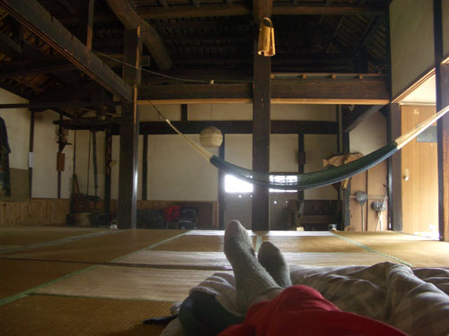
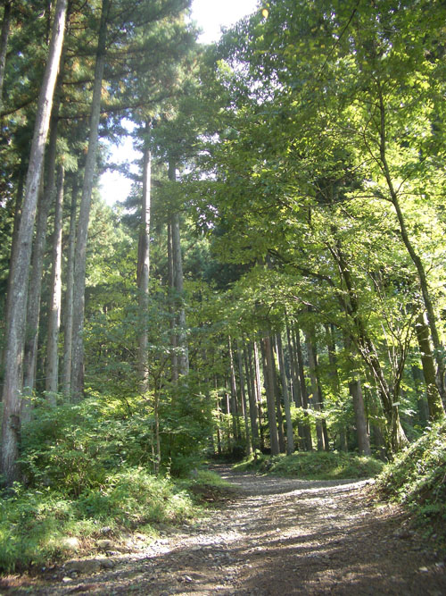
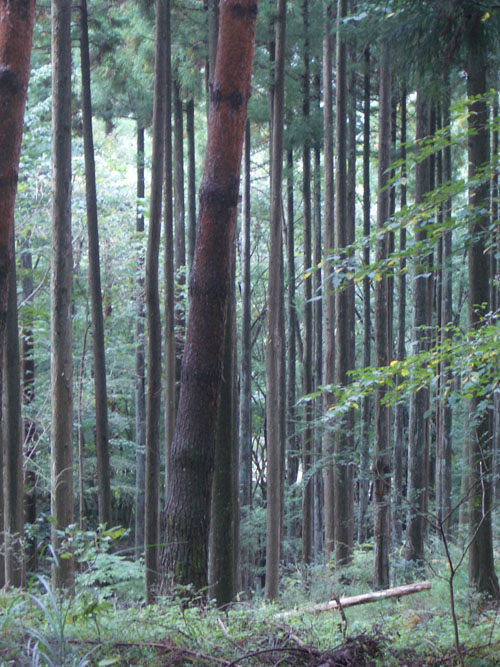
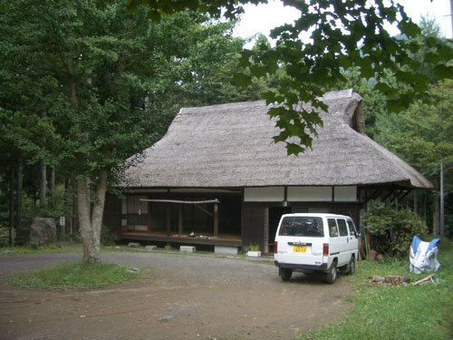
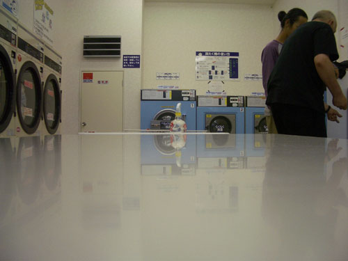
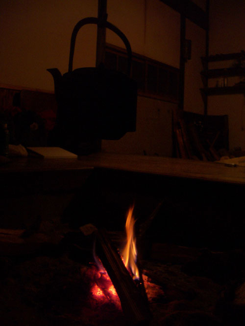

| < | > |
| Once in a thousand years ... | [2004-10-18 01:00] |
| I forgot to mention that Yuichi likes reggae, jazz and brazilian music. We had gone to sleep the night before listening to the radio. He usually gets up at 6, so the radio was programmed to come on automatically in the morning. "Hello, this is Radio Cool Jazz. It's a bright new morning here in Tokyo." It took sometime before he woke and turned it off. I gazed up at the smoke-black timber ceiling.  There was no hurry to do anything so we slept again. I tried to take this panorama (my first) before getting up around 11. To the smell of coffee, we put away the sliding doors and gathered on cushions to wake slowly listening to the tiny ding of the wind chime bell. Happy just to laze around, we decided on a tour of the campsite as a suitably peaceful way to pass the morning.  He walked us up – past the wasabi plants growing in the mud – into the silence where they had felled trees earlier in the summer. While João asked our sensei many questions, I sat and remembered I was once a country boy.  Families come from nearby Yokahama, to spend time in the woods. Yuichi's job is to take the children off the parents hands for a few hours. On the walk back down he pointed out some seats he had made, perched high up on the side of some trees. "It's good for a child to sit up there. The important thing is to play." * Washing had to be done. It was too damp to dry anything over the weekend. We'd have to go down into the local town. Back, into Yuichi's little van ...  and out through the tunnel, twisting down into the damp little town. Kids were hanging out in the local store as we went into the launderette to prepare for the coming week.  While we waited for the things to wash we walked down the road to a big local supermarket. Oh such beautiful food. If only we could shop in such a paradise in London. * That evening, Yuichi's boss Mr. Ota had invited us to dinner. Everywhere Yuichi goes someone wants to take care of him. Mr Ota was no exception. I'm sure he realizes he is nurturing a sage. The big old house was like a deluxe version of Yuichi's. With all kinds of family treasure lurking in dark corners. We sat on the floor around the semi-sunken table and were introduced to the family. "My mother. My wife. My son." Granny was a cheerful cunning old girl who played host while Mrs Ota scurried nurse-like, constantly bringing new courses from the kitchen. It was strange to be guests of honour when we could do little more than smile and moan appreciation with each mouthful. The son didn't stay long, he had to study. But before he left he was prodded into displaying his English. He asked if we were interested in sports. It didn't matter that we were not, because it was only a pretext to tell with pride of his recent black belt achievements. He was the youngest of three brothers, the other two – twins – were actors in Tokyo. No wonder Mr Ota held Yuichi in such high regard. They shared a love of the village that his sons – born there – could probably never achieve. The star of the evening was a mechanical doll that Mr Ota's brother had given to his mother because there were no girls in her family. This slightly worn-looking doll murmured and chuckled every so often, especially when Granny whacked her on the head. The simple tasty meal over, it was time for everyone to retire, so we said our arigatos and returned to our smokey fireside and bed.  |
|
|
|
{kind=link}